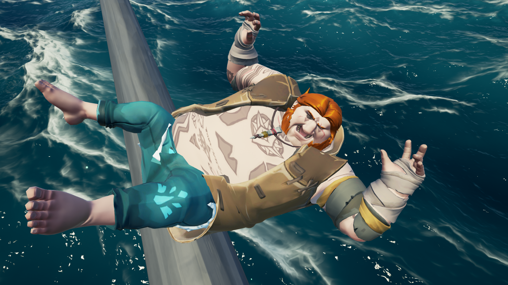

"Depuis que je joue a Hogwarts Lgacy mon envie de représenter la maison Gryffondor est tellement prenante que je me dois d'assouvir mon besoin d'incarner mon personnage préféré sur le jeux de mon coeur. Je vous présente Le LEST de Gryffondor gRon WisLaid le célèbre pirate magicien !
- Max
"Après une matinée de dure labeur sur les mers pour ce Community Day d'exception, j'ai décidé de me reposer un peu sur mon matelas de fortune. Malheuresement mes amies Harry et Hermione m'ont fais des coups de Trafalgar dans mon sommeil. Depuis tanto je ne rêve que de vengence et représailles quand on iras demandé en répa "gRon Wizlaid tu peut écop stp ?". J'irais saboter l'équipage en ne faisait que des splash contre les parois de mon batal, bref je vous teindrais au courant de mes mésaventure sous peu."
Votre pirate magicien préféré
- gRon WisLaid
gRon Wisley avait une réputation redoutable en tant que pirate magicien. Avec ses amis les crabes à ses côtés, il avait navigué les sept mers en quête de richesses et d'aventures. Mais gRon était aussi un défenseur de la justice et de l'ordre, et il avait juré de mettre fin aux activités des Détraqués, ces mages noirs qui semaient la terreur dans le monde magique. C'est ainsi que gRon avait appris que Momoque, l'un des plus infâmes Détraqués, tentait de s'enfuir sur sa sloop. gRon avait décidé de le poursuivre et de le capturer pour le juger selon les lois d'Azkaban. gRon avait demandé à ses amis les crabes de l'accompagner dans cette mission. Ils avaient accepté sans hésiter, sachant que Momoque était une menace pour leur habitat naturel. La poursuite avait commencé. gRon avait ordonné à son bateau, le Lest de Grifondor, de prendre les voiles et de suivre la sloop de Momoque. Le Détraqué avait essayé de semer gRon en utilisant des sorts de dissimulation, mais gRon avait réussi à les contrer grâce à sa magie. Finalement, Momoque avait été acculé dans une crique isolée. gRon avait ordonné à ses crabes de se tenir prêts à l'attaque, tandis qu'il sautait sur la sloop ennemie. Momoque avait sorti sa baguette magique, mais gRon était trop rapide pour lui. Il avait lancé un sort de désarmement qui avait fait voler la baguette de Momoque hors de sa main. Puis, sans attendre, gRon avait sorti son épée magique et avait chargé le Détraqué. Momoque avait essayé de se défendre, mais gRon était un maître de l'épée. Il avait évité les sorts du Détraqué avec agilité, puis avait porté un coup fatal. Momoque était tombé au sol, mort. gRon avait récupéré la baguette de Momoque et avait ordonné à ses crabes de fouiller la sloop pour y trouver d'autres indices sur les activités des Détraqués. La mission était un succès. gRon avait accompli sa promesse de mettre fin à la menace de Momoque. Les crabes avaient sauvé leur habitat naturel. Et gRon avait une fois de plus prouvé qu'il était un pirate magicien redoutable, ami des crabes, défenseur d'Azkaban, frère du prince de Sang-Mouillé et tueur invétéré de Détraqués.
l était une fois, sur les mers tumultueuses, gRon Wisley et son équipage voguaient sur leur navire, Carpet Seller. Ils étaient à la recherche d'un détraqué redoutable nommé Cheshire qui avait causé de nombreux méfaits dans la région. gRon Wisley avait entendu parler de l'amour de Cheshire pour les gâteaux aux yaourt et avait une idée astucieuse. Il ordonna à Freyja de préparer une cargaison de gâteaux aux yaourt et de laisser une partie de la cargaison sur une île déserte, tout en gardant le reste pour le navire. Cheshire, attiré par l'odeur des gâteaux, tomba dans le piège tendu par gRon Wisley. Il dévora tous les gâteaux et s'endormit. L'équipage de gRon Wisley en profita pour l'emmener à bord du Carpet Seller. Une fois que Cheshire se réveilla, il se retrouva prisonnier du navire. gRon Wisley avait juré de le capturer et de le tuer pour tous les méfaits qu'il avait commis. Cheshire tenta de résister, mais il était en infériorité numérique. Finalement, après une lutte acharnée, gRon Wisley et son équipage réussirent à tuer Cheshire. La tête coupée du détraqué fut exhibée devant tout l'équipage comme un avertissement pour tous ceux qui voudraient s'opposer à gRon Wisley et son équipage. ▪️ Ainsi, gRon Wisley et son équipage continuèrent leur voyage, traquant d'autres détraqués et accomplissant des exploits incroyables sur les mers tumultueuses. Ils resteront à jamais dans les mémoires comme les plus grands pirates magiciens ayant jamais navigué sur les océans.
gRon Wisley et son équipage avaient entendu parler du légendaire shrouded ghost, un mégalodon gigantesque qui avait été vu très rarement dans les eaux des Caraïbes. Ils avaient toujours voulu le voir de leurs propres yeux, mais il était connu pour être incroyablement difficile à trouver. Un jour, alors qu'ils naviguaient près de l'île de Gatas, ils entendirent des rumeurs selon lesquelles le shrouded ghost avait été aperçu dans les eaux environnantes. Sans hésiter, gRon Wisley et son équipage se mirent à la recherche de la créature. Après plusieurs jours de navigation, ils repérèrent une forme massive qui se déplaçait sous la surface de l'eau. gRon Wisley reconnut immédiatement la silhouette massive du shrouded ghost. L'équipage de gRon Wisley avait déjà coulé plusieurs navires ennemis, mais le shrouded ghost était une créature bien plus imposante. Cependant, gRon Wisley était déterminé à affronter la bête, malgré les risques. Ils se préparèrent pour le combat, hissèrent les voiles et chargèrent le mégalodon. Le shrouded ghost, cependant, ne se laissa pas impressionner et se défendit avec une férocité incroyable. Les flancs du navire de gRon Wisley étaient frappés à plusieurs reprises, et l'équipage avait du mal à maintenir leur position. Cirak, ZeRDozZ et Freyja travaillaient en équipe pour contrôler les voiles et diriger le navire, tandis que gRon Wisley et quelques membres de l'équipage combattaient le shrouded ghost. Ils se défendaient avec acharnement, mais la bataille faisait rage depuis des heures, épuisant petit à petit les combattants. Finalement, après une longue lutte, gRon Wisley réussit à porter le coup final qui tua le shrouded ghost. L'équipage était épuisé et blessé, mais ils avaient réussi leur quête. Ils avaient vaincu la créature légendaire. gRon Wisley et son équipage célébrèrent leur victoire, sachant que leur exploit serait raconté pour les générations à venir. Ils avaient accompli quelque chose que peu de personnes avaient réussi à faire, et ils étaient fiers de leur accomplissement. Cela leur donna une nouvelle confiance en eux-mêmes et leur équipage, et ils continuèrent leur périple à travers les mers des Caraïbes, prêts pour leur prochaine aventure